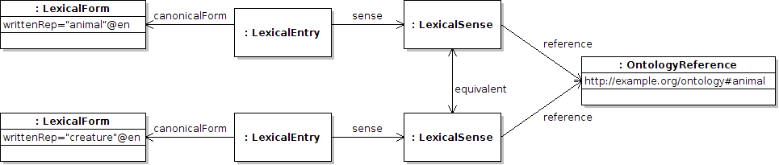

Next: Lexical variants Up: Variation Module Previous: Variation Module Contents
It is possible to relate the sense objects using the predicate lemon:senseRelation. This has the following sub-properties defined in lemon:
These can be used to state the similarity of the terms “animal” and “creature” as follows
:animal lemon:canonicalForm [ lemon:writtenRep "animal"@en ] ; lemon:sense :animal_sense . :animal_sense lemon:reference ontology:animal ; lemon:equivalent :creature_sense . :creature lemon:canonicalForm [ lemon:writtenRep "creature"@en ] ; lemon:sense :creature_sense . :creature_sense lemon:reference ontology:animal ; lemon:equivalent :animal_sense .

For a further example of the usefulness of these similarities consider the case of the French words “rivière” and “fleuve”, these refer to rivers that flow into other rivers and the sea respectively. As such this distinction can be modeled by the following sub-graph.
:fleuve lemon:sense :fleuve_sense .
:riviere lemon:sense :riviere_sense .
:river lemon:sense :river_sense .
:fleuve_sense lemon:incompatible :riviere_sense .
:riviere_sense lemon:incompatible :fleuve_sense .
:river_sense lemon:narrower :riviere_sense ,
:fleuve_sense .